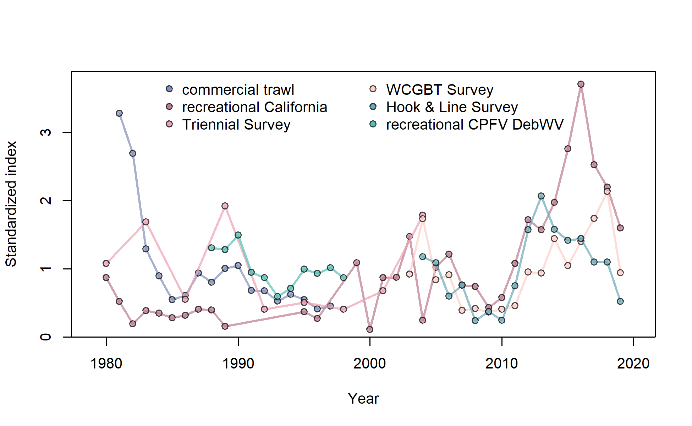

Index data for commercial trawl. Lines indicate 95% uncertainty interval around index values based on the model assumption of lognormal error. Thicker lines (if present) indicate input uncertainty before addition of estimated additional uncertainty parameter.
file: index1_cpuedata_commercial trawl.png

Fit to index data for commercial trawl. Lines indicate 95% uncertainty interval around index values based on the model assumption of lognormal error. Thicker lines (if present) indicate input uncertainty before addition of estimated additional uncertainty parameter.
file: index2_cpuefit_commercial trawl.png

Observed vs. expected index values with smoother for commercial trawl
file: index3_obs_vs_exp_commercial trawl.png

Log index data for commercial trawl. Lines indicate 95% uncertainty interval around index values based on the model assumption of lognormal error. Thicker lines (if present) indicate input uncertainty before addition of estimated additional uncertainty parameter.
file: index4_logcpuedata_commercial trawl.png

Fit to log index data on log scale for commercial trawl. Lines indicate 95% uncertainty interval around index values based on the model assumption of lognormal error. Thicker lines (if present) indicate input uncertainty before addition of estimated additional uncertainty parameter.
file: index5_logcpuefit_commercial trawl.png

log(observed) vs. log(expected) index values with smoother for commercial trawl
file: index6_log_obs_vs_exp_commercial trawl.png

Residuals of fit to index for commercial trawl.
Values are (log(Obs) - log(Exp))/SE where SE is the total standard error including any estimated additional uncertainty.
file: index10_resids_SE_total_commercial trawl.png

Deviations for fit to index for commercial trawl.
Values are log(Obs) - log(Exp) and thus independent of index uncertainty.
file: index12_resids_SE_total_commercial trawl.png

Index data for recreational California. Lines indicate 95% uncertainty interval around index values based on the model assumption of lognormal error. Thicker lines (if present) indicate input uncertainty before addition of estimated additional uncertainty parameter.
file: index1_cpuedata_recreational California.png

Fit to index data for recreational California. Lines indicate 95% uncertainty interval around index values based on the model assumption of lognormal error. Thicker lines (if present) indicate input uncertainty before addition of estimated additional uncertainty parameter.
file: index2_cpuefit_recreational California.png

Observed vs. expected index values with smoother for recreational California
file: index3_obs_vs_exp_recreational California.png

Log index data for recreational California. Lines indicate 95% uncertainty interval around index values based on the model assumption of lognormal error. Thicker lines (if present) indicate input uncertainty before addition of estimated additional uncertainty parameter.
file: index4_logcpuedata_recreational California.png

Fit to log index data on log scale for recreational California. Lines indicate 95% uncertainty interval around index values based on the model assumption of lognormal error. Thicker lines (if present) indicate input uncertainty before addition of estimated additional uncertainty parameter.
file: index5_logcpuefit_recreational California.png

log(observed) vs. log(expected) index values with smoother for recreational California
file: index6_log_obs_vs_exp_recreational California.png

Timeseries of catchability for recreational California
file: index7_timevarying_q_recreational California.png

Catchability vs. vulnerable biomass for fleet recreational California
This plot should illustrate curvature of nonlinear catchability relationship
or reveal patterns associated with random-walk catchability.
file: index8_q_vs_vuln_bio_recreational California.png

Residuals of fit to index for recreational California.
Values are (log(Obs) - log(Exp))/SE where SE is the total standard error including any estimated additional uncertainty.
file: index10_resids_SE_total_recreational California.png

Deviations for fit to index for recreational California.
Values are log(Obs) - log(Exp) and thus independent of index uncertainty.
file: index12_resids_SE_total_recreational California.png

Index data for Triennial Survey. Lines indicate 95% uncertainty interval around index values based on the model assumption of lognormal error. Thicker lines (if present) indicate input uncertainty before addition of estimated additional uncertainty parameter.
file: index1_cpuedata_Triennial Survey.png

Fit to index data for Triennial Survey. Lines indicate 95% uncertainty interval around index values based on the model assumption of lognormal error. Thicker lines (if present) indicate input uncertainty before addition of estimated additional uncertainty parameter.
file: index2_cpuefit_Triennial Survey.png

Observed vs. expected index values with smoother for Triennial Survey
file: index3_obs_vs_exp_Triennial Survey.png

Log index data for Triennial Survey. Lines indicate 95% uncertainty interval around index values based on the model assumption of lognormal error. Thicker lines (if present) indicate input uncertainty before addition of estimated additional uncertainty parameter.
file: index4_logcpuedata_Triennial Survey.png

Fit to log index data on log scale for Triennial Survey. Lines indicate 95% uncertainty interval around index values based on the model assumption of lognormal error. Thicker lines (if present) indicate input uncertainty before addition of estimated additional uncertainty parameter.
file: index5_logcpuefit_Triennial Survey.png

log(observed) vs. log(expected) index values with smoother for Triennial Survey
file: index6_log_obs_vs_exp_Triennial Survey.png

Residuals of fit to index for Triennial Survey.
Values are (log(Obs) - log(Exp))/SE where SE is the total standard error including any estimated additional uncertainty.
file: index10_resids_SE_total_Triennial Survey.png

Deviations for fit to index for Triennial Survey.
Values are log(Obs) - log(Exp) and thus independent of index uncertainty.
file: index12_resids_SE_total_Triennial Survey.png

Index data for WCGBT Survey. Lines indicate 95% uncertainty interval around index values based on the model assumption of lognormal error. Thicker lines (if present) indicate input uncertainty before addition of estimated additional uncertainty parameter.
file: index1_cpuedata_WCGBT Survey.png

Fit to index data for WCGBT Survey. Lines indicate 95% uncertainty interval around index values based on the model assumption of lognormal error. Thicker lines (if present) indicate input uncertainty before addition of estimated additional uncertainty parameter.
file: index2_cpuefit_WCGBT Survey.png

Observed vs. expected index values with smoother for WCGBT Survey
file: index3_obs_vs_exp_WCGBT Survey.png

Log index data for WCGBT Survey. Lines indicate 95% uncertainty interval around index values based on the model assumption of lognormal error. Thicker lines (if present) indicate input uncertainty before addition of estimated additional uncertainty parameter.
file: index4_logcpuedata_WCGBT Survey.png

Fit to log index data on log scale for WCGBT Survey. Lines indicate 95% uncertainty interval around index values based on the model assumption of lognormal error. Thicker lines (if present) indicate input uncertainty before addition of estimated additional uncertainty parameter.
file: index5_logcpuefit_WCGBT Survey.png

log(observed) vs. log(expected) index values with smoother for WCGBT Survey
file: index6_log_obs_vs_exp_WCGBT Survey.png

Residuals of fit to index for WCGBT Survey.
Values are (log(Obs) - log(Exp))/SE where SE is the total standard error including any estimated additional uncertainty.
file: index10_resids_SE_total_WCGBT Survey.png

Deviations for fit to index for WCGBT Survey.
Values are log(Obs) - log(Exp) and thus independent of index uncertainty.
file: index12_resids_SE_total_WCGBT Survey.png

Index data for Hook & Line Survey. Lines indicate 95% uncertainty interval around index values based on the model assumption of lognormal error. Thicker lines (if present) indicate input uncertainty before addition of estimated additional uncertainty parameter.
file: index1_cpuedata_Hook & Line Survey.png

Fit to index data for Hook & Line Survey. Lines indicate 95% uncertainty interval around index values based on the model assumption of lognormal error. Thicker lines (if present) indicate input uncertainty before addition of estimated additional uncertainty parameter.
file: index2_cpuefit_Hook & Line Survey.png

Observed vs. expected index values with smoother for Hook & Line Survey
file: index3_obs_vs_exp_Hook & Line Survey.png

Log index data for Hook & Line Survey. Lines indicate 95% uncertainty interval around index values based on the model assumption of lognormal error. Thicker lines (if present) indicate input uncertainty before addition of estimated additional uncertainty parameter.
file: index4_logcpuedata_Hook & Line Survey.png

Fit to log index data on log scale for Hook & Line Survey. Lines indicate 95% uncertainty interval around index values based on the model assumption of lognormal error. Thicker lines (if present) indicate input uncertainty before addition of estimated additional uncertainty parameter.
file: index5_logcpuefit_Hook & Line Survey.png

log(observed) vs. log(expected) index values with smoother for Hook & Line Survey
file: index6_log_obs_vs_exp_Hook & Line Survey.png

Residuals of fit to index for Hook & Line Survey.
Values are (log(Obs) - log(Exp))/SE where SE is the total standard error including any estimated additional uncertainty.
file: index10_resids_SE_total_Hook & Line Survey.png

Deviations for fit to index for Hook & Line Survey.
Values are log(Obs) - log(Exp) and thus independent of index uncertainty.
file: index12_resids_SE_total_Hook & Line Survey.png

Index data for recreational CPFV DebWV. Lines indicate 95% uncertainty interval around index values based on the model assumption of lognormal error. Thicker lines (if present) indicate input uncertainty before addition of estimated additional uncertainty parameter.
file: index1_cpuedata_recreational CPFV DebWV.png

Fit to index data for recreational CPFV DebWV. Lines indicate 95% uncertainty interval around index values based on the model assumption of lognormal error. Thicker lines (if present) indicate input uncertainty before addition of estimated additional uncertainty parameter.
file: index2_cpuefit_recreational CPFV DebWV.png

Observed vs. expected index values with smoother for recreational CPFV DebWV
file: index3_obs_vs_exp_recreational CPFV DebWV.png

Log index data for recreational CPFV DebWV. Lines indicate 95% uncertainty interval around index values based on the model assumption of lognormal error. Thicker lines (if present) indicate input uncertainty before addition of estimated additional uncertainty parameter.
file: index4_logcpuedata_recreational CPFV DebWV.png

Fit to log index data on log scale for recreational CPFV DebWV. Lines indicate 95% uncertainty interval around index values based on the model assumption of lognormal error. Thicker lines (if present) indicate input uncertainty before addition of estimated additional uncertainty parameter.
file: index5_logcpuefit_recreational CPFV DebWV.png

log(observed) vs. log(expected) index values with smoother for recreational CPFV DebWV
file: index6_log_obs_vs_exp_recreational CPFV DebWV.png

Residuals of fit to index for recreational CPFV DebWV.
Values are (log(Obs) - log(Exp))/SE where SE is the total standard error including any estimated additional uncertainty.
file: index10_resids_SE_total_recreational CPFV DebWV.png

Deviations for fit to index for recreational CPFV DebWV.
Values are log(Obs) - log(Exp) and thus independent of index uncertainty.
file: index12_resids_SE_total_recreational CPFV DebWV.png

Standardized indices overlaid. Each index is rescaled to have mean observation = 1.0.
file: index9_standcpueall.png
{kind=link}